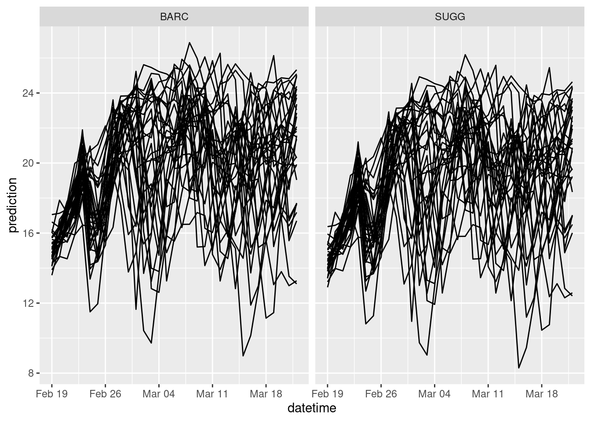

library(tidyverse)
library(tidymodels)
tidymodels_prefer()
set.seed(100) #for random number generation11 Project 1: Create model and submit
Project is challenges you to build a new model the forecasts NEON water temperature using the foundations that have been taught thus far in the book. You will be automatically submitting forecasts to the NEON Ecological Forecasting Challenge.
Here is information about generating and submitting forecasts: https://projects.ecoforecast.org/neon4cast-ci/
You are welcome to use any modeling or statistical framework. Some great resources for R packages that open the doors to many modeling frameworks are below.
11.1 Intro to Tidymodels
https://github.com/frec-3044/machine-learning-template
11.1.1 Step 1: Obtain data
Read in data to memory. In the course we have accessed csv, excel, and database forms located in the github repo, on websites, and through an API.
11.1.2 Step 2: Pre-process data
11.1.2.1 Split data: divide data into the training and test sets.
- You will use the training set to fit your model and the testing set to evaluate the model performance.
- We only want to evaluate our model using data that the model has not used yet. Otherwise we can only say that the model is good at fitting the data that was used to train it. This is not helpful for understanding how it would perform as a tool generate new predictions.
- You want most of your data in the training set because machine learning models can be quite “hungry for data” (e.g, next a large dataset to find a good fit).
- A typical split is 80% training and 20% testing but there isn’t a required split.
- Data are randomly assigned to the two splits.
- Your data may have obvious groupings that you want to be equally represented in both the training and testing sets. For example, if you have cats and dogs as a variable you are using to predict tail length, you may want to be sure that your training set is not randomly full of dogs because than means it may not predict the cats well in the testing set. You can prevent this by defining the
strataused when assigning the training and testing sets.
11.1.2.2 Recipes: Modify predictors/features/covariates/independent variables for analysis
- Modify data set so that variables are correctly formatted for a particular model. For example, a linear regression requires groups to be dummy variables. Therefore, a column called “ecosystem” with two values: “forest” and “grass” would be converted to two columns: ecosystem_forest with a value of 0 or 1 and ecosystem_grass with a value of 0 and 1)
- Removing highly correlated predictors
- Rescaling predictor (e.g., converting to 0 mean and 1 standard deviation)
- transforming predictors (e.g., log)
11.1.3 Step 3: Specify model and workflow
A workflow combines the model and recipe in a single “object” that you can use for training, testing, and predicting new data.
- Define model type: linear regression, regression tree, neutral net, etc.
- Define model engine: particular R package (
lm,ranger, etc.) - Define model mode: regression or classification
- Define workflow: combine recipe and model definition
11.1.4 Step 4: Train model
Tune hyper-parameters: hyper-parameters are configuration settings the govern how a particular ML method is fit to data. They are called “hyper” because “regular” parameters are the parameter within the model that are learned by the ML method. For example, a method called “random forecast” requires a hyper-parameter that controls the minimum size of a regression tree that is allowed. This parameter (called
min_n) could be directly provided by you or could be tuned. The tuning process involves repeatedly fitting the model using different values of the hyper-parameter and using the hyper-parameter values that yield the best fit to the data. Importantly: not all ML methods have hyper-parameter (e.g., linear regression using thelmengine does not have hyper-parameters). We don’t tune hyperparameters in this example. Seeexample-with-tuning.Rmdfor an extension of this application that includes hyperparameter tuning.Fit model (using best hyper-parameter if they are tuned). The model is fit to the training data.
11.1.5 Step 5: Predict
- Predict testing data using the model that was fit to the training data. This step is critical because we only want to evaluate our model using data that the model has not used yet. Otherwise we can only say that the model is good at fitting the data that was used to train it. This is not helpful for understand how it would perform as a tool generate new predictions.
- Predictions are quite easy using the
predict()function.
11.1.6 Step 6: Evaluate model
- It is important to use the appropriate metrics to evaluate how the model performs. Some metrics only apply to classification problems and other only apply to regression problems. A list of metric types can be found here
- We will be focusing on root-mean squared error (
rmse), a metric that subtracts each observation from the predictions, squares it, averages all the squared errors for all the data points, and then takes the square root of the mean squared error.
- R-squared (
rsq) is another metric that we used in the lake ice module.
11.1.7 Step 7: Deploy model
- One of main points of using machine learning is to develop a tool that can be used with new predictors to predict data that wasn’t involved in the training and testing. These are data that have all the columns necessary to make predictions but lack data in the column you are trying to predict.
- This step is simple because it involve using the
predict()function with the same trained model but with new data.
11.1.8 Application: Predicting water temperature at NEON sites
11.1.8.1 Step 1: Obtain data
lake_sites <- c("BARC", "SUGG")targets <- read_csv('https://data.ecoforecast.org/neon4cast-targets/aquatics/aquatics-targets.csv.gz',
show_col_types = FALSE) |>
filter(site_id %in% lake_sites)targets <- targets |>
filter(site_id %in% lake_sites,
variable == "temperature")# past stacked weather
df_past <- neon4cast::noaa_stage3()
variables <- c("air_temperature")
noaa_past <- df_past |>
dplyr::filter(site_id %in% lake_sites,
datetime >= ymd('2017-01-01'),
variable %in% variables) |>
dplyr::collect()# aggregate the past to mean values
noaa_past_mean <- noaa_past |>
mutate(datetime = as_date(datetime)) |>
group_by(datetime, site_id, variable) |>
summarize(prediction = mean(prediction, na.rm = TRUE), .groups = "drop") |>
pivot_wider(names_from = variable, values_from = prediction) |>
# convert air temp to C
mutate(air_temperature = air_temperature - 273.15)forecast_date <- Sys.Date()
noaa_date <- forecast_date - days(2)
df_future <- neon4cast::noaa_stage2(start_date = noaa_date)
variables <- c("air_temperature")
noaa_future <- df_future |>
dplyr::filter(reference_datetime == noaa_date,
datetime >= forecast_date,
site_id %in% lake_sites,
variable %in% variables) |>
dplyr::collect()noaa_future_daily <- noaa_future |>
mutate(datetime = as_date(datetime)) |>
# mean daily forecasts at each site per ensemble
summarize(prediction = mean(prediction), .by = c("datetime", "site_id", "parameter", "variable")) |>
pivot_wider(names_from = variable, values_from = prediction) |>
# convert to Celsius
mutate(air_temperature = air_temperature - 273.15) |>
select(datetime, site_id, air_temperature, parameter)targets_df <- targets |>
filter(variable == 'temperature') |>
pivot_wider(names_from = 'variable', values_from = 'observation') |>
left_join(noaa_past_mean,
by = c("datetime","site_id")) |>
mutate(doy = yday(datetime))11.1.8.2 Step 2: Pre-process data
11.1.8.2.1 Split data into training/testing sets
We are going to split the data into training and testing sets using the initial_split function. prop = 0.80 says to use 80% of the data in the training set.
split <- initial_split(targets_df, prop = 0.80, strata = site_id)Our split should reflect the 80/20 that we defined using prop
split<Training/Testing/Total>
<3588/898/4486>To actually get the training and testing data we need to apply the training() and testing() functions to the split.
train_data <- training(split)
test_data <- testing(split)You can see that train_data is a data frame that we can work with.
train_data# A tibble: 3,588 × 5
datetime site_id temperature air_temperature doy
<date> <chr> <dbl> <dbl> <dbl>
1 2017-08-27 BARC 31.5 NA 239
2 2017-08-28 BARC 31.1 NA 240
3 2017-08-29 BARC 31.1 NA 241
4 2017-08-30 BARC 31.4 NA 242
5 2017-08-31 BARC 31.7 NA 243
6 2017-09-01 BARC 31.6 NA 244
7 2017-09-02 BARC 31.1 NA 245
8 2017-09-03 BARC 31.1 NA 246
9 2017-09-06 BARC 30.8 NA 249
10 2017-09-07 BARC 30.5 NA 250
# ℹ 3,578 more rows11.1.8.2.2 Feature engineering using a recipe
- requires starting with dataset that is used to provide the columns.
- a formula with the dependent variable and the predictors. If
.is used as the predictors, that means use all columns other than the dependent variable. - Steps that modify the data
We will use the following steps:
step_rmbecause we don’t want to use the datetime in the fit.step_naomitbecause there are na values in the temperature and air_temperature columns. This is used here for illustrative purposes and can also be done by filtering the target data before it is split into training and testing groups
Here are the different recipe steps used above
Here is our recipe:
our_recipe <- train_data |>
recipe(temperature ~ . ) |>
step_rm(datetime) |>
step_naomit(air_temperature, temperature)The recipe should show the steps that will be performed when applying the recipe. Importantly, these steps have not yet been applied, we just have a recipe of what to do.
our_recipe── Recipe ──────────────────────────────────────────────────────────────────────── Inputs Number of variables by roleoutcome: 1
predictor: 4── Operations • Variables removed: datetime• Removing rows with NA values in: air_temperature and temperature11.1.8.3 Step 3: Specify model, engine, and workflow
We need to create the model and engine that we will use. In this example, we are using linear_reg with the mode of regression (as opposed to classification). Setting the mode for a linear regression is actually not necessary because it only allows regressions but it is included here for completeness.
The engine is lm because we are using the standard R function lm. There are a ton of other functions for linear regression modeling that we could use. They would be specified as a different engine.
our_model <- linear_reg(mode = "regression") |>
set_engine("lm")You will see the model, mode, and engine in the model object
our_model Linear Regression Model Specification (regression)
Computational engine: lm We now combine the model and the recipe together to make a workflow that can be used to fit the training and testing data. workflow() initiates the workflow and add_model and add_recipe add those components to the workflow. Importantly, the workflow has not yet been applied, we just have description of what to do.
wflow <-
workflow() |>
add_model(our_model) |>
add_recipe(our_recipe)You can see that the workflow object has all the components together
wflow══ Workflow ════════════════════════════════════════════════════════════════════
Preprocessor: Recipe
Model: linear_reg()
── Preprocessor ────────────────────────────────────────────────────────────────
2 Recipe Steps
• step_rm()
• step_naomit()
── Model ───────────────────────────────────────────────────────────────────────
Linear Regression Model Specification (regression)
Computational engine: lm 11.1.8.4 Step 4: Train model on Training Data
We will use the workflow object to train the model. We need to provide the workflow object and the dataset to the fit function to fit (i.e., train the model)
fit <- wflow |>
fit(data = train_data)You can see that the fit object is the workflow object + the results of the model fitting
fit══ Workflow [trained] ══════════════════════════════════════════════════════════
Preprocessor: Recipe
Model: linear_reg()
── Preprocessor ────────────────────────────────────────────────────────────────
2 Recipe Steps
• step_rm()
• step_naomit()
── Model ───────────────────────────────────────────────────────────────────────
Call:
stats::lm(formula = ..y ~ ., data = data)
Coefficients:
(Intercept) site_idSUGG air_temperature doy
5.308760 -0.735499 0.858610 0.004031 11.1.8.5 Step 5: Predict Test Data
Now we will predict the testing data using the model that was fit to the training data.
predictions <- predict(fit, new_data = test_data)The predictions are a single column called .pred
predictions# A tibble: 898 × 1
.pred
<dbl>
1 NA
2 NA
3 NA
4 NA
5 NA
6 NA
7 NA
8 NA
9 NA
10 NA
# ℹ 888 more rowsWe need to combine the .pred column with the testing data using the bind_cols function
pred_test <- bind_cols(test_data, predictions)Now we have a data frame with the prediction and all the predictors used to predict it.
pred_test# A tibble: 898 × 6
datetime site_id temperature air_temperature doy .pred
<date> <chr> <dbl> <dbl> <dbl> <dbl>
1 2017-09-04 BARC 31.4 NA 247 NA
2 2017-09-05 BARC 31.0 NA 248 NA
3 2017-09-14 BARC 28.5 NA 257 NA
4 2017-09-17 BARC 28.8 NA 260 NA
5 2017-09-22 BARC 29.0 NA 265 NA
6 2017-10-04 BARC 27.6 NA 277 NA
7 2017-10-06 BARC 27.6 NA 279 NA
8 2017-10-10 BARC 29.5 NA 283 NA
9 2017-10-11 BARC 29.6 NA 284 NA
10 2017-10-14 BARC 28.5 NA 287 NA
# ℹ 888 more rows11.1.8.6 Step 6: Evaluate model
We will evaluate the performance of our predictions of the testing data using two metrics (rmse and rsq). The function metric_set defines the set of metric we will be using them. It creates a function called multi_metric() that we will use to calculate the metrics. We pipe in the predicted test data (pred_test) and tell the function that our truth (i.e., observed data) is the temperature column and the predictions (i.e., estimate) is the .pred column
multi_metric <- metric_set(rmse, rsq)
metric_table <- pred_test |>
multi_metric(truth = temperature, estimate = .pred)The resulting table has the metrics for evaluation
metric_table# A tibble: 2 × 3
.metric .estimator .estimate
<chr> <chr> <dbl>
1 rmse standard 2.38
2 rsq standard 0.79411.1.8.7 Step 7: Deploy model
The final step is to apply your model to predict new data.
Now read in the new data.
targets_future <- noaa_future_daily |>
mutate(temperature = NA,
doy = yday(datetime)) |>
filter(parameter == 1) |>
select(-parameter)You will notice that the temperature is all NA because you don’t know what the carbon stock is of the plot.
targets_future# A tibble: 68 × 5
datetime site_id air_temperature temperature doy
<date> <chr> <dbl> <lgl> <dbl>
1 2024-02-16 SUGG 17.2 NA 47
2 2024-02-17 SUGG 14.6 NA 48
3 2024-02-18 SUGG 13.1 NA 49
4 2024-02-19 SUGG 12.7 NA 50
5 2024-02-20 SUGG 14.2 NA 51
6 2024-02-21 SUGG 15.5 NA 52
7 2024-02-22 SUGG 16.2 NA 53
8 2024-02-23 SUGG 17.1 NA 54
9 2024-02-24 SUGG 16.9 NA 55
10 2024-02-25 SUGG 15.6 NA 56
# ℹ 58 more rowsAs in “Step 5: Predict Test Data”, use the model fitting on the training data (fit) to predict the new data.
new_predictions <- predict(fit, new_data = targets_future)targets_future <- noaa_future_daily |>
mutate(temperature = NA,
doy = yday(datetime))
tidymodels_forecast <- data.frame()
for(i in unique(targets_future$parameter)){
curr_ens <- targets_future |>
filter(parameter == i) |>
select(-parameter)
new_predictions <- predict(fit, new_data = curr_ens)
curr_ens <- bind_cols(curr_ens, new_predictions) |>
mutate(parameter = i)
tidymodels_forecast <- bind_rows(tidymodels_forecast, curr_ens)
}tidymodels_forecasts_EFI <- tidymodels_forecast %>%
rename(prediction = .pred) %>%
mutate(variable = "temperature") |>
# For the EFI challenge we only want the forecast for future
filter(datetime > Sys.Date()) %>%
group_by(site_id, variable) %>%
mutate(reference_datetime = min(datetime) - lubridate::days(1),
family = "ensemble",
model_id = "tidymodels_lm") %>%
select(model_id, datetime, reference_datetime, site_id, family, parameter, variable, prediction)tidymodels_forecasts_EFI |>
filter(variable == "temperature") |>
ggplot(aes(x = datetime, y = prediction, group = parameter)) +
geom_line() +
facet_wrap(~site_id)
11.1.9 Tidymodel extra
11.1.9.1 Changing the model approach
You can easy change the modeling approach by changing the model and engine. For example the following code replaces the linear regression model with a random forest model from the ranger package. All other code used fit and predict with the model stays the same.
our_model <- rand_forest(mode = "regression") |>
set_engine("ranger")A list of models that are available for you to use can be found here. Not all models are designed for all applications. For example, forecasting water temperature requires regression models rather than classification models.
11.1.9.2 Tuning hyper-parameters
Some modeling approaches have parameters that govern how the model fitting done. These are called hyperparameters. Hyperparameters are different from the parameters that are optimized using data in the modeling fitting step. Tidymodels provides tools to also fit hyperparameters. An example can be found here.
11.2 Intro to Fable Models
library(tidyverse)
library(tsibble)
library(fable)Loading required package: fabletools
Attaching package: 'fabletools'The following object is masked from 'package:yardstick':
accuracyThe following object is masked from 'package:parsnip':
null_modelThe following objects are masked from 'package:infer':
generate, hypothesizetargets <- read_csv('https://data.ecoforecast.org/neon4cast-targets/aquatics/aquatics-targets.csv.gz',
show_col_types = FALSE)max_horizon <- 35
var <- "temperature"
site <- "BARC"forecast_starts <- targets |>
dplyr::filter(!is.na(observation) & site_id == site & variable == var) |>
# Start the day after the most recent non-NA value
dplyr::summarise(start_date = max(datetime) + lubridate::days(1)) |> # Date
dplyr::mutate(h = (Sys.Date() - start_date) + max_horizon) |> # Horizon value
dplyr::ungroup()targets_use <- targets |>
dplyr::filter(site_id == site,
variable == var) %>%
tsibble::as_tsibble(key = c('variable', 'site_id'), index = 'datetime') |>
# add NA values up to today (index)
tsibble::fill_gaps(.end = Sys.Date()) |>
# Remove the NA's put at the end, so that the forecast starts from the last day with an observation,
# rather than today
dplyr::filter(datetime < forecast_starts$start_date)RW_model <- targets_use |>
fabletools::model(RW = fable::RW(observation))forecast <- RW_model |>
fabletools::generate(h = 35, bootstrap = T, times = 200)RW_forecasts_EFI <- forecast %>%
rename(parameter = .rep,
prediction = .sim) %>%
# For the EFI challenge we only want the forecast for future
filter(datetime > Sys.Date()) %>%
group_by(site_id, variable) %>%
mutate(reference_datetime = min(datetime) - lubridate::days(1),
family = "ensemble",
model_id = "persistenceRW") %>%
select(model_id, datetime, reference_datetime, site_id, family, parameter, variable, prediction)RW_forecasts_EFI |>
filter(variable == "temperature") |>
ggplot(aes(x = datetime, y = prediction, group = parameter)) +
geom_line() +
facet_wrap(~site_id)11.2.1 Fable extra
11.2.1.1 Other models
RW_model <- targets_use |>
fabletools::model(ETS = fable::ETS(observation ~ season("A")))Warning: 1 error encountered for ETS
[1] ETS does not support missing values.A list of the other models are are: https://fable.tidyverts.org/reference/index.html
11.3 How to submit a forecast
The introductions registering your model and submitting it can be found here.